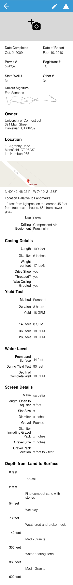
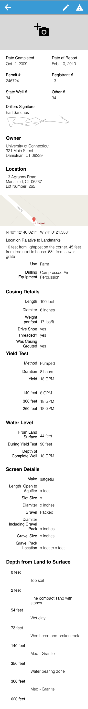
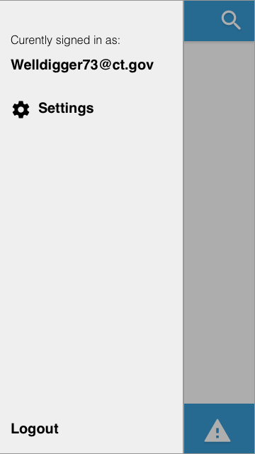
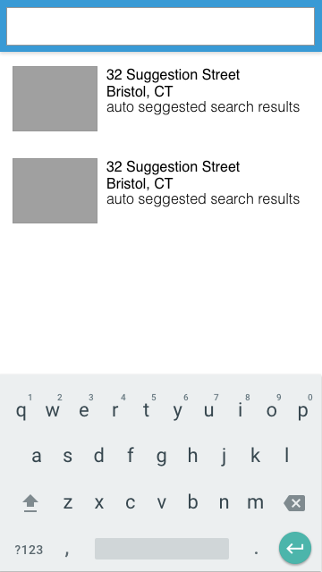
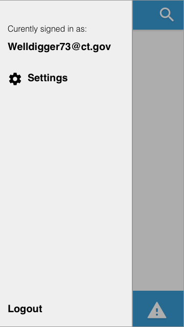
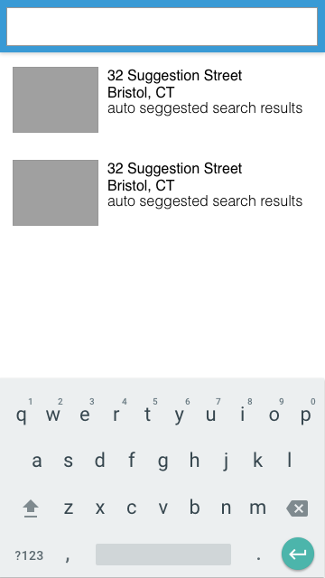

Wello App
CS Senior design project in partnership with Professor Gary Robbins - Fall 2016 to Spring 2017
Background: Whenever a well is drilled, the driller must also fill out a completion report that describes the characteristics of the well. In Connecticut, these reports are stored as paper copies or tiff files, with no central database. The goal is to have an app that drillers, homeowners, and environmental regulators, can use to determine the characteristics and location of a well. It would also be beneficial for environmental regulators to be able to see if there are wells in the vicinity of, for example, an oil spill, so they can determine if any wells are at risk of being contaminated. The app is meant to be a prototype that can be used to approach the state to get funding for a statewide effort.
Requirements:- Should be a mobile app with a companion web interface capable of executing administrative tasks
- Display the location of wells using the Google Maps API
- The map should be searchable by physical address, latitude and longitude, and GPS reading from the phone
- Provide the ability for users to take and upload photos of the well and/or incident
- Capability to have the well driller input the data on the completion report using the app, and send it to a central server
- Ability to utilize the entered well report data to automatically generate the completion report
My Role: As part of a group of five, I was in charge of designing the app, while the rest of my team had primarily developer roles.
Initial Sketches: After hearing the brief, I began drafting sketches for the UI. These drafts helped me anticipate requirements that would likely arise later in the development cycle.
Research: After getting out any initial thoughts I began my research process, which starts by checking out the competition. Once I understood what tools other states had implemented, I generated some provisional personas to get an idea of the people who will be using our product. With the personas on hand I could write user stories for the functionality each would require.
Findings:- Default stylings
- “Get the job done” approach
- Rather than one search field, separate fields for each attribute:
- Very specific search
- Easier implementation
- Takes up a lot of space
- Users know what they can search with, decreasing input errors
- Users may be overwhelmed if it is their first time using this
- Odd/even color scheme for rows
- Font is quite small
- Lists, lists, and more lists
Provisional Personas: There are several types of users, each with different levels of database permissions. It was important to profile each user group to determine exactly what permissions and functionality they would require. With a limited ability to interview potential users, I created the following provisional personas.
Use Case Diagrams: With the our previous research in mind, we then created the following use case diagrams for each user type, User (level 1), Contractor (Level 2), and Administrator (Level 3).
Initial Sketches/Wireframes: After gathering more details about users and their needs, I refined my initial mockups to better suit the user's needs. The more important parts of the slide-out menu were moved to the bottom of the screen for easier access. The list view of wells now includes markers for saved, denied, and under review well completion forms. The form itself now has all the necessary details grouped similarly to the paper form, which will help users adopt the digital method more easily. Finally, a desktop portal was designed with administrators in mind.
 



 





To be continued ...
(currently in development)